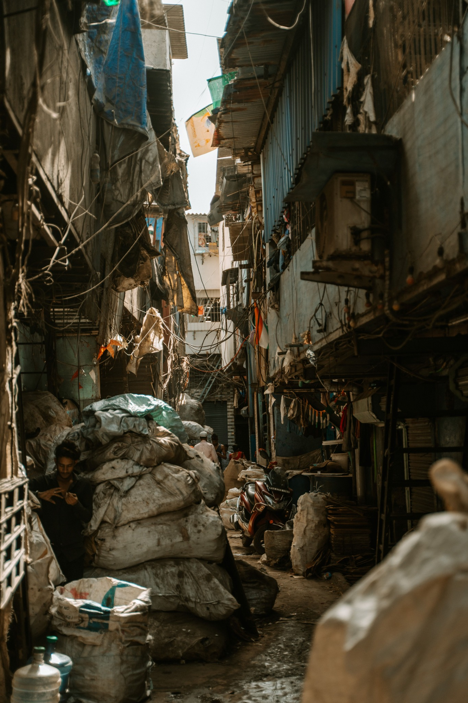
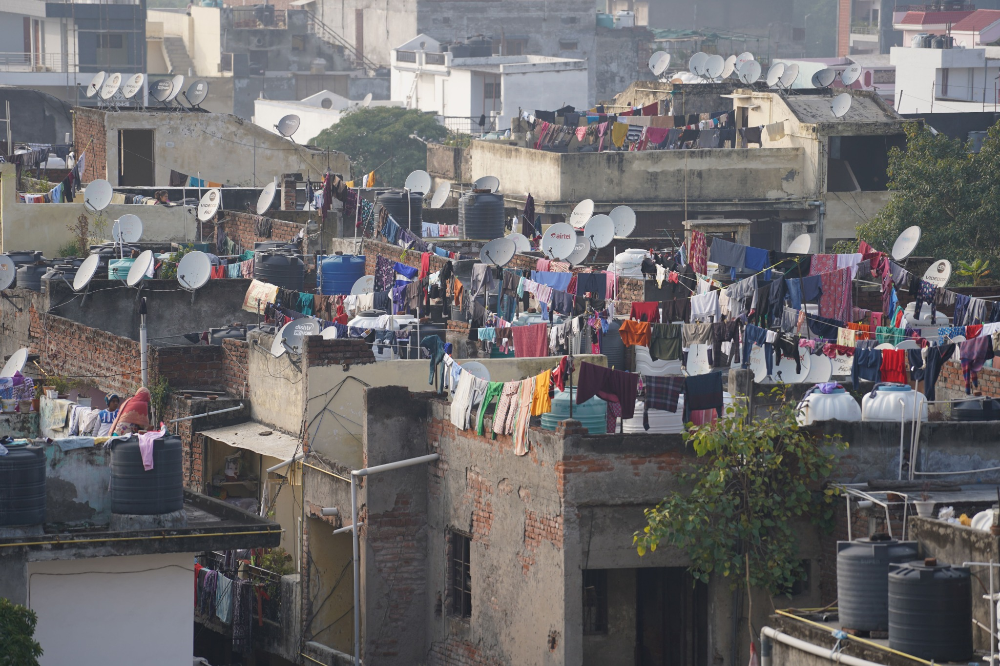

Housing, poverty & health equity
The built environment and material conditions can influence health, safety and access to services. These photographs are contextual, not evidence of a specific health outcome.



Original field photographs and interview-based material will be added following appropriate ethical approval, informed consent and safeguarding review. These images are included for visual context and are not represented as original field reporting.
The question
Access to healthcare is shaped by more than the presence of a clinic. Transport, cost, staffing, medicine availability, health literacy and trust can all affect whether people receive timely care. A rigorous story would begin by listening to patients and frontline workers, then examine the systems around them.
What reporting could explore
- What practical barriers do patients describe when seeking care?
- How do frontline health workers experience staffing, supplies and referral pathways?
- What do official data and independent research show about access and outcomes?
- Where do coordination gaps between services create avoidable delays?
Interview notebook
Questions for a future interview
For a patient or caregiver: What made seeking care easier or harder? What would you change first?
For a health worker: Which barriers are most common? What happens when a patient needs support beyond your service?
For a public-health specialist: What evidence identifies the biggest access gaps, and which interventions have been evaluated?
Replace these prompts with verified, consented interviews. Record context and any anonymity requested.
Evidence and accountability
A completed article should cite credible public-health research, distinguish evidence from opinion, and give relevant institutions an opportunity to respond to specific findings. Avoid identifying vulnerable people without informed consent and a clear safety assessment.
← Back to all stories